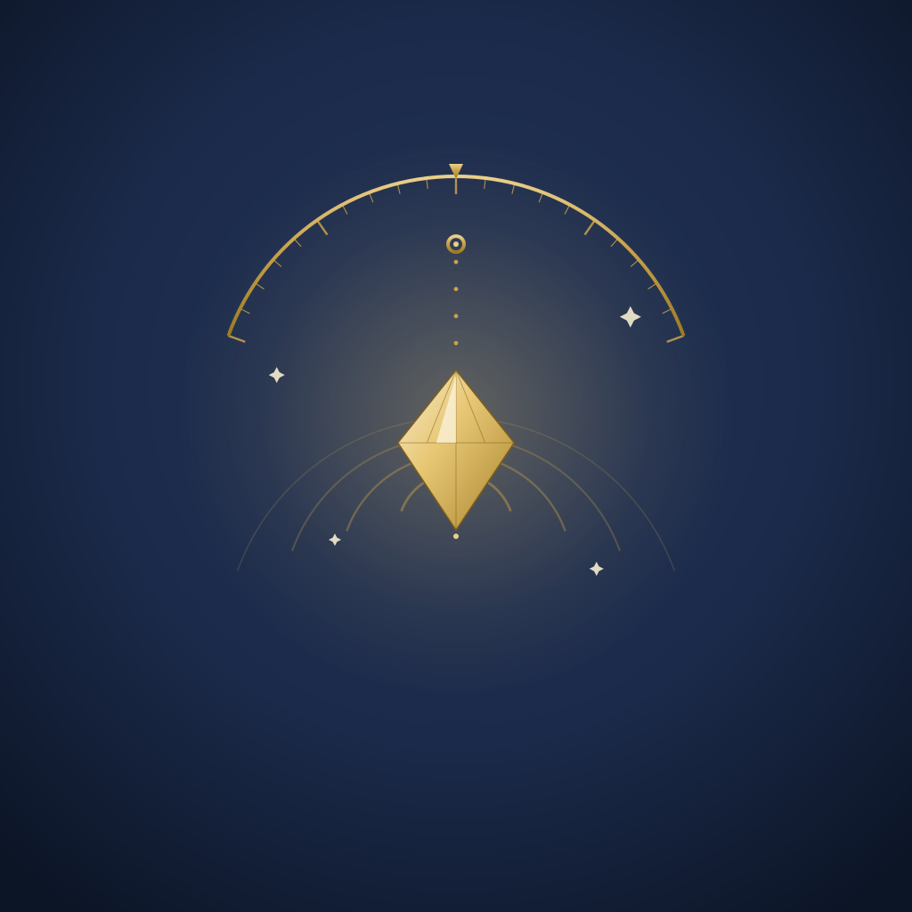

L'oracle radiesthésique de poche. Posez une question, laissez le pendule répondre — sur soi, un proche, un animal ou un lieu.
Plus de 160 cadrans de radiesthésie, réunis dans un écrin clair et premium. Consultation gratuite ; la pratique en Premium.
Un grand cadran plein écran, à lire au pendule physique ou en tirage intuitif animé.
13 modules : humain, animal, lieu, temps, énergie, chakras, âmes & mémoires, mondes subtils…
Les fondamentaux pas à pas : oui/non, oui/non/peut-être, échelle de 0 à 100 %.
Pour les praticiens : suivez vos sujets, menez des séances avant/après, exportez en PDF et Excel.
Créez vos propres cadrans à partir de nos gabarits — nom, segments, couleurs — et tirez-les au pendule.
Vos données restent sur votre téléphone ; les sauvegardes sont protégées par mot de passe (AES-256).
Radiescoon fonctionne hors ligne : vos dossiers, séances et notes sont stockés uniquement sur votre appareil. Aucune donnée personnelle n'est transmise à nos serveurs. Vos sauvegardes peuvent être chiffrées par mot de passe.
Nous répondons généralement sous 48 heures.
✉️ jdviallat@gmail.com